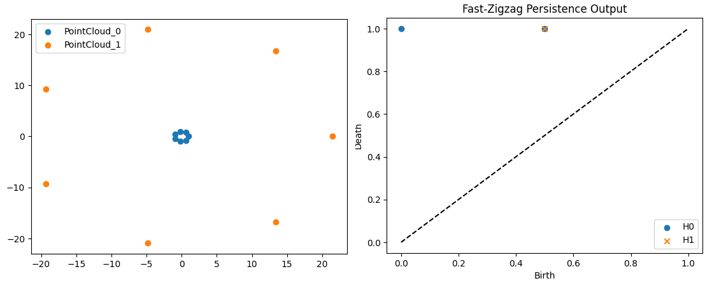

2.3.7. Fast Zigzag
These modules help generate the input file and read the output file for fast-zigzag software (fzz).
Warning
Because fzz is not pip-installable, it is not automatically included when you install teaspoon. In order to use this submodule, you need to manually install fzz first.
Note also that currently the way this system works is to write a file that is read into fzz, and the output file is then read back into python. This is not ideal, so in the future we hope to find a more efficient pipeline.
2.3.7.1. Generate Input File & Read Output
Given a list of point clouds, the input file can be generated using the following module
- teaspoon.TDA.fast_zigzag.generate_input_file(point_clouds, filename='output', radius=10, n_perm=25, plotting=False)[source]
This function generates the input file for fast-zigzag software by TDA-Jyamiti group.
- Parameters:
point_clouds (list) – List of point clouds in R2.
filename (str) – Name of file generated.
radius (float) – Radius at which the rips complex is generated.
n_perm (int) – Number of points to take from given point clouds for greedy permutation.
plotting (bool) – if True, plots the point clouds
- Returns:
Number of lines of filtrations inserted for a point cloud. [list]: Number of lines of filtrations deleted for a point cloud.
- Return type:
[list]
and the output can be read and plotted by the following module
- teaspoon.TDA.fast_zigzag.plot_output_zigzag(filename, inserts, deletes, plotH2=False)[source]
This function takes the output file from fast-zigzag software by TDA-Jyamiti group and number of insertions/deletions output by the above function and plots the zigzag persistence diagram.
- Parameters:
filename (str) – Name of file generated.
inserts (list) – Number of lines of filtrations inserted for a point cloud.
deletes (list) – Number of lines of filtrations deleted for a point cloud.
plotH2 (bool) – if True, plots the H2 components in the zigzag persistence diagram
- Returns:
Dictionary of persistence points for each homology class
- Return type:
[dict]
2.3.7.1.1. Example
The following example plots the zigzag persistence for point clouds such that the rips complex turns from a blob to a circle:
import numpy as np
from teaspoon.TDA.fast_zigzag import generate_input_file, plot_output_zigzag
point_clouds = []
t = np.linspace(0, 2*np.pi, 8)[:-1]
point_clouds.append(np.vstack((1*np.cos(t), 1*np.sin(t))).T)
point_clouds.append(np.vstack((21*np.cos(t), 21*np.sin(t))).T)
inserts, deletes = generate_input_file(point_clouds, filename='output', radius=19, n_perm=25, plotting=False)
os.system(f"./fzz output")
filename = 'output_pers'
plot_output_zigzag(filename, inserts, deletes, plotH2=False)
The point clouds with the peristence diagram
{kind=link}